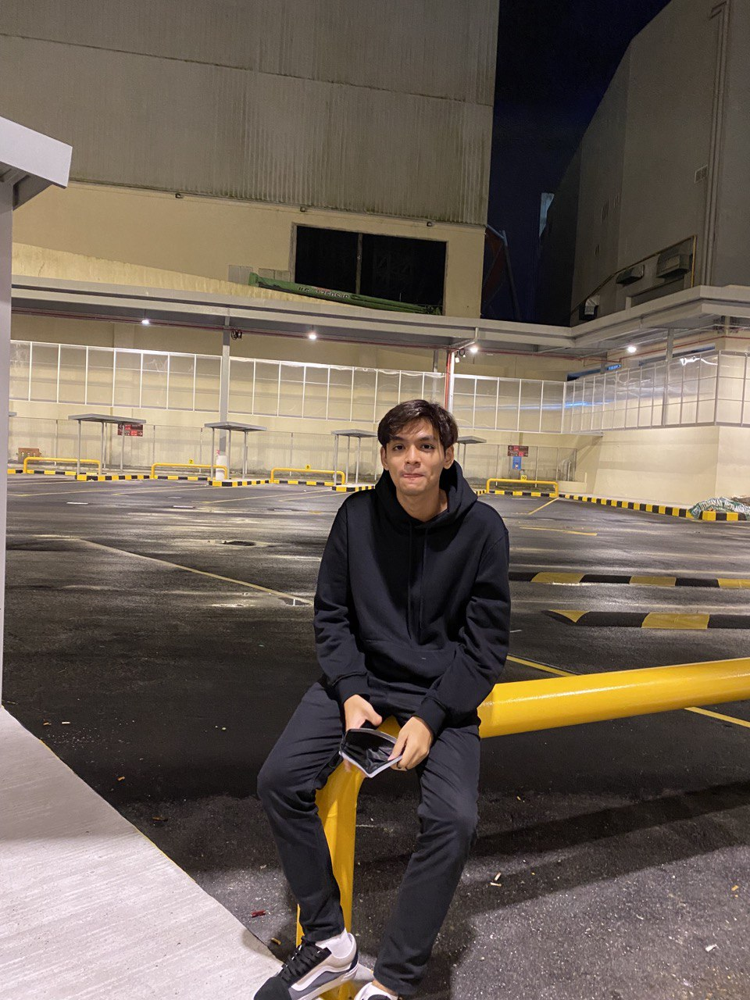

<html>
<head>
<meta charset = "utf-8" />
         
<title>
 Portfolio🗲
</title>
              
<!-- add icon link -->
<link rel = "icon" href = "images/icon browser.gif" type = "image/x-icon">             
</head>
</html>   

<body>

<meta name="viewport" content="width=device-width, initial-scale=1">
<link rel="stylesheet" href="https://www.w3schools.com/w3css/4/w3.css">
<link rel='stylesheet' href='https://fonts.googleapis.com/css?family=Roboto'>
<link rel="stylesheet" href="https://cdnjs.cloudflare.com/ajax/libs/font-awesome/4.7.0/css/font-awesome.min.css">
<style>
html,body,h1,h2,h3,h4,h5,h6 {font-family: "Roboto", sans-serif}
</style>
</head>
<body class="w3-grey">

<!-- Page Container -->
<div class="w3-content w3-margin-top" style="max-width:1400px;">

  <!-- The Grid -->
  <div class="w3-row-padding">
  
    <!-- Left Column -->
    <div class="w3-third">
    
      <div class="w3-black w3-text-grey w3-card-4">
        <div class="w3-display-container">
          
          <div class="w3-display-bottomleft w3-container w3-text-white">
          </div>
        </div>
        <div class="w3-container">
        <p><h2>Huzayll Muqrith</h2></p>
          <p><i class="fa fa-briefcase fa-fw w3-margin-right w3-large w3-text-aqua"></i>Graphic Designer</p>
          <p><i class="fa fa-home fa-fw w3-margin-right w3-large w3-text-aqua"></i>Selangor, MY</p>
          <p><i class="fa fa-envelope fa-fw w3-margin-right w3-large w3-text-aqua"></i>huzayllmuqrith@mail.com</p>
          <p><i class="fa fa-phone fa-fw w3-margin-right w3-large w3-text-aqua"></i>019-2626573</p>
          <hr>

          <p class="w3-large"><b><i class="fa fa-asterisk fa-fw w3-margin-right w3-text-aqua"></i>Skills</b></p>
          <p>Adobe Photoshop</p>
          <div class="w3-light-grey w3-round-xlarge w3-small">
            <div class="w3-container w3-center w3-round-xlarge w3-aqua" style="width:90%">90%</div>
          </div>
          <p>Photography</p>
          <div class="w3-light-grey w3-round-xlarge w3-small">
            <div class="w3-container w3-center w3-round-xlarge w3-aqua" style="width:80%">
              <div class="w3-center w3-text-black">80%</div>
            </div>
          </div>
          <p>Adobe Illustrator</p>
          <div class="w3-light-grey w3-round-xlarge w3-small">
            <div class="w3-container w3-center w3-round-xlarge w3-aqua" style="width:75%">75%</div>
          </div>
          <p>Videography</p>
          <div class="w3-light-grey w3-round-xlarge w3-small">
            <div class="w3-container w3-center w3-round-xlarge w3-aqua" style="width:80%">80%</div>
          </div>
          <br>

          <p class="w3-large w3-text-theme"><b><i class="fa fa-globe fa-fw w3-margin-right w3-text-aqua"></i>Languages</b></p>
          <p>Malay</p>
          <div class="w3-light-grey w3-round-xlarge">
            <div class="w3-round-xlarge w3-aqua" style="height:24px;width:100%"></div>
          </div>
          <p>English</p>
          <div class="w3-light-grey w3-round-xlarge">
            <div class="w3-round-xlarge w3-aqua" style="height:24px;width:90%"></div>
          </div>
          <br>
        </div>
      </div><br>

    <!-- End Left Column -->
    </div>

    <!-- Right Column -->
    <div class="w3-twothird">
    
      <div class="w3-container w3-card w3-black w3-margin-bottom">
        <h2 class="w3-text-grey w3-padding-16"><i class="fa solid fa-suitcase fa-fw w3-margin-right w3-xxlarge w3-text-white"></i>Work Experience</h2>
        <div class="w3-container">
          <h5 class="w3-opacity"><b>BARBER</b></h5>
          <h6 class="w3-text-aqua"><i class="fa fa-calendar fa-fw w3-margin-right"></i> 2019 - <span class="w3-tag w3-grey w3-round">2020</span></h6>
          <p>I started as a trainee and worked as a barber, serve clients with haircuts & manage the shop by dealing with queries on the phone and by email</p>
          <hr>
        </div>
    

      <div class="w3-container w3-card w3-black">
        <h2 class="w3-text-grey w3-padding-16"><i class="fa solid fa-graduation-cap fa-fw w3-margin-right w3-xxlarge w3-text-white"></i>Education</h2>
        <div class="w3-container">
          <h5 class="w3-opacity"><b>SMK LA SALLE KLANG</b></h5>
          <h6 class="w3-text-aqua"><i class="fa fa-calendar fa-fw w3-margin-right"></i>2015 - <span class="w3-tag w3-grey w3-round">2019</span></h6>
          <p>Sijil Pelajaran Malaysia </p>
          <hr>
        </div>
        <div class="w3-container w3-card w3-black">
        <h2 class="w3-text-grey w3-padding-16"><i class="fa solid fa-certificate fa-fw w3-margin-right w3-xxlarge w3-text-white"></i>Education</h2>
        <div class="w3-container">
          <h5 class="w3-opacity"><b>UNIVERSITI TEKNOLOGI MARA, REMBAU</b></h5>
          <h6 class="w3-text-aqua"><i class="fa fa-calendar fa-fw w3-margin-right"></i>2021 - <span class="w3-tag w3-grey w3-round">2023</span></h6>
          <p>Diploma of Information Management</p>
          <hr>
          <div class="w3-container w3-card w3-black">
            <h5 class="w3-opacity"><b>ABOUT ME</b></h5>
            <div class="w3-container">
                
      <!-- End Right Column -->
    </div>
    
  <!-- End Grid -->
  </div>
  
  <!-- End Page Container -->
</div>
<style>
    img {
      float: left;
      margin: 5px;
    }
  
    p {
      text-align: justify;
      font-size: 100%;
    }
  </style>
<body>
  <div class="square">
    <div>
      
    </div>
      
<p align="justify">My name is Huzayll Muqrith Bin Israrr Ahmad and I am 21 years old. I was born and raised in Klang, Selangor. I started working as a barber in my local barbershop in 2019 - 2020. In this time, I have gained a lot of experience in serving my clients with haircuts and managing a little bit of their social media for content design.

    I started my high school education at SMK La Salle Klang from 2015 to 2019. During this time, I managed to gain my SPM exam certificate and I managed to get 7B on my result. Recently, I have just gained my diploma in Information Management at Uitm Rembau. During my study, I managed to learn a lot of things related to information technology such as content design, web design and programming language.
    
    I believe that all the experience I have gained so far has been beneficial to me and will help me in my future career. I plan to utilize all the knowledge I have gained and use it to help me further my career, and I hope to use my skills to help others with their technology needs. I am confident that my skills will be a major asset to any company that I work for in the future.🗲</p>

</div>
</div>
<footer>
<footer class="w3-container w3-black w3-center w3-margin-bottom">
  <i class="fa fa-instagram w3-hover-opacity"></i>
  <i class="fa fa-soundcloud w3-hover-opacity"></i>
  <i class="fa fa-youtube-play w3-hover-opacity"></i>
</footer>

</body>
</html>
